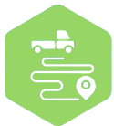
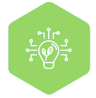

PT Ecowaste Indonesia Prima beroperasi dengan perizinan resmi dan mengikuti seluruh regulasi yang berlaku di Indonesia, termasuk:
- Izin Pengangkutan Limbah B3
- Izin Kementerian Lingkungan Hidup
- Izin Kementrian Perhubungan
PT Ecowaste Indonesia Prima menyediakan solusi logistik limbah B3 yang aman, efisien, dan bertanggung jawab di seluruh Indonesia.
PT Ecowaste Indonesia Prima (EIP) adalah perusahaan nasional yang bergerak di bidang jasa transportasi limbah B3 (Bahan Berbahaya dan Beracun) dengan standar tinggi, berorientasi pada keselamatan, kepatuhan regulasi serta keberlangsungan lingkungan.
Didirikan dengan komitmen untuk menjadi mitra terpercaya bagi industri, kami menghadirkan solusi logistik mulai dari pengangkutan hingga pengelolaan akhir sesuai peraturan yang berlaku.
Menjadi perusahaan transporter limbah B3 terdepan di Indonesia yang unggul dalam keselamatan, kepatuhan, mempertimbangkan lingkungan dan inovasi yang berkelanjutan.
Memberikan layanan terbaik dengan standar tinggi disertai dengan layanan hospitality terhadap semua mitra dan partner
Mematuhi serta melengkapi seluruh regulasi dan perizinan yang berlaku di bidang transportasi limbah B3
Menjadikan keselamatan sebagai prioritas utama dalam landasan bekerja untuk setiap stakeholder
Menjunjung tinggi integritas dalam setiap aktivitas kinerja perorangan maupun perusahaan

Layanan pengangkutan limbah B3 dari lokasi klien menuju fasilitas pengolahan atau pemusnahan dengan standar keamanan tinggi.
Memberikan solusi strategis dalam pengelolaan limbah B3 yang efisien dan sesuai ketentuan.

Sistem logistik terintegrasi untuk monitoring, tracking, dan pelaporan secara real-time dan transparan.
Memilih mitra dalam pengangkutan limbah B3 bukan hanya tentang layanan, tetapi tentang kepercayaan, kepatuhan, dan jaminan keselamatan.
PT Ecowaste Indonesia Prima hadir sebagai solusi yang memberikan nilai lebih bagi setiap klien.
Setiap layanan kami dirancang untuk mendukung praktik industri yang ramah lingkungan dan bertanggung jawab.
Dengan kombinasi pengalaman, sistem yang terintegrasi, dan komitmen tinggi terhadap kualitas, PT Ecowaste Indonesia Prima menjadi pilihan tepat bagi perusahaan yang mengutamakan keamanan, kepatuhan, dan keberlanjutan.
Ecowaste Indonesia Prima siap untuk melayani transportasi limbah B3 dari berbagai sektor industri sesuai dengan izin dan legalitas yang telah diberikan oleh Kementrian Lingkungan Hidup dan Kementrian Perhubungan.
PT Ecowaste Indonesia Prima beroperasi dengan perizinan resmi dan mengikuti seluruh regulasi yang berlaku di Indonesia, termasuk: